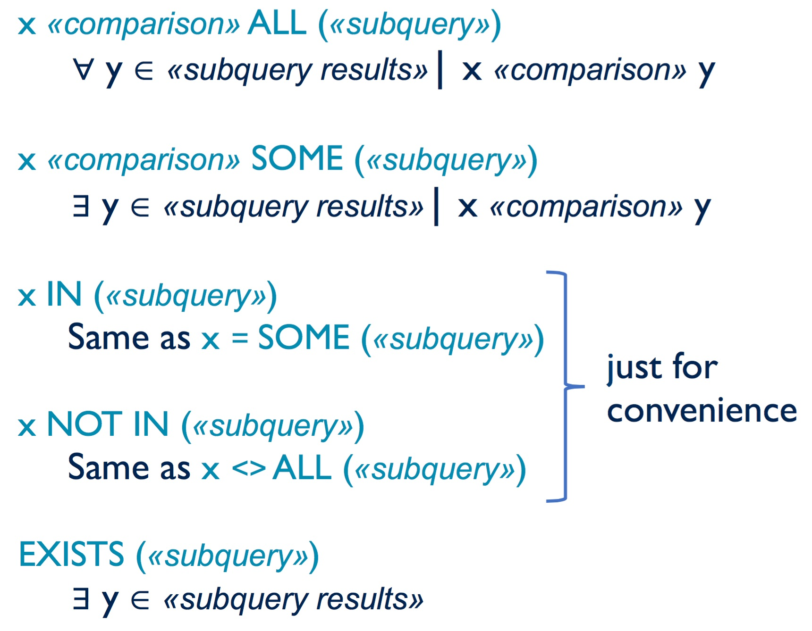

The syntax of relational algebra was so simple and elegant that is was easy to specify where subqueries could go. SQL requires a bit more thought. Here’s we’ll work through each of the valid locations for a subquery.
We’ve already seen that set operations involve subqueries. For example, this INTERSECT query has two operands, each of which is a subquery:
csc343h-prof=> -- Recall that the round brackets are required.
csc343h-prof=> (SELECT sid FROM Took WHERE grade > 95)
csc343h-prof-> INTERSECT
csc343h-prof-> (SELECT sid FROM Took WHERE grade < 50);
sid
-------
99132
157
(2 rows)In fact, all set operations (INTERSECT, UNION and EXCEPT) have two subqueries as operands.
A subquery can take the place of a table name in the FROM clause of a query. For example, this query reports which students have taken which course offerings:
csc343h-dianeh=> SELECT sID, dept||cNum as course
csc343h-dianeh-> FROM Took,
csc343h-dianeh-> Offering -- This piece is about to change.
csc343h-dianeh-> WHERE Took.oID = Offering.oID;
sid | course
-------+--------
157 | CSC343
99999 | CSC343
98000 | CSC343
99132 | CSC343
157 | CSC343
99132 | CSC207
157 | CSC207
etc.Suppose we want to restrict the query to consider just course offerings where the instructor was Horton. We can achieve that by replacing table Offering with a more specific subquery:
csc343h-dianeh-> SELECT sID, dept||cNum as course
csc343h-dianeh-> FROM Took,
csc343h-dianeh-> (SELECT *
csc343h-dianeh-> FROM Offering
csc343h-dianeh-> WHERE instructor = 'Horton'
csc343h-dianeh-> ) Hoffering
csc343h-dianeh-> WHERE Took.oID = Hoffering.oID;There are two syntactic requirements for subqueries in a FROM clause:
In this case, we named the subquery result Hoffering (for “Horton offering”). In the WHERE clause, notice that we compared to Hoffering.oID. If we compared instead to Offering.oid, we would get an error. We can’t talk about that table in our WHERE clause because we never brought it in to the conversation in the FROM clause. The error message would report: missing FROM-clause entry for table "offering".
Notice that we didn’t need to use a subquery; we could just as easily have done the filtering for Horton’s course offerings in the WHERE clause:
csc343h-dianeh=> SELECT sID, dept||cNum as course
csc343h-dianeh-> FROM Took, Offering
csc343h-dianeh-> WHERE Took.oID = Offering.oID AND
csc343h-dianeh-> instructor = 'Horton';This is a simpler query to understand, which also means we are less likely to make a mistake writing it. What about efficiency? If we were to naively compute the results in the manner suggested by the query, we would produce a huge Cartesian product, including many, many rows about other instructors, that would be pruned by the WHERE clause. It is more efficient to do what the subquery version suggests, and eliminate all the non-Horton offerings before blowing things up into a huge Cartesian product.
But remember: any DBMS will be will do query optimization rather than implement the query naively. In fact, in postgreSQL, we can easily see the DBMS’s plan for executing a query using the EXPLAIN command. Here is its plan for the more “efficient” version of the query:
csc343h-dianeh=> EXPLAIN
csc343h-dianeh-> SELECT sID, dept||cNum as course
csc343h-dianeh-> FROM Took,
csc343h-dianeh-> (SELECT *
csc343h-dianeh-> FROM Offering
csc343h-dianeh-> WHERE instructor = 'Horton'
csc343h-dianeh-> ) Hoffering
csc343h-dianeh-> WHERE Took.oID = Hoffering.oID;
QUERY PLAN
----------------------------------------------------------------------
Hash Join (cost=19.05..20.81 rows=1 width=40)
Hash Cond: (took.oid = offering.oid)
-> Seq Scan on took (cost=0.00..1.54 rows=54 width=8)
-> Hash (cost=19.00..19.00 rows=4 width=40)
-> Seq Scan on offering (cost=0.00..19.00 rows=4 width=40)
Filter: ((instructor)::text = 'Horton'::text)
(6 rows)The details of the query plan are a little beyond what we’ve learned so far (although notice the mention of hashing; pay attention when you learning hashing in csc263 – it’s useful as well a conceptually interesting!). But notice that both the total cost and all the details of the plan are exactly the same as in the query plan for the simpler but “inefficient” version of the query:
csc343h-dianeh=> explain SELECT sID, dept||cNum as course
csc343h-dianeh-> FROM Took, Offering
csc343h-dianeh-> WHERE Took.oID = Offering.oID AND
csc343h-dianeh-> instructor = 'Horton';
QUERY PLAN
----------------------------------------------------------------------
Hash Join (cost=19.05..20.81 rows=1 width=40)
Hash Cond: (took.oid = offering.oid)
-> Seq Scan on took (cost=0.00..1.54 rows=54 width=8)
-> Hash (cost=19.00..19.00 rows=4 width=40)
-> Seq Scan on offering (cost=0.00..19.00 rows=4 width=40)
Filter: ((instructor)::text = 'Horton'::text)
(6 rows)If a subquery produces exactly one row, we can compare to it in a WHERE clause. Here’s an example:
csc343h-dianeh=> SELECT sID, surname, cgpa
csc343h-dianeh-> FROM Student
csc343h-dianeh-> WHERE cgpa >
csc343h-dianeh-> (SELECT cgpa
csc343h-dianeh(> FROM Student
csc343h-dianeh(> WHERE sID = 99999);
sid | surname | cgpa
-------+------------+------
99132 | Marchmount | 3.13
98000 | Fairgrieve | 4.00
157 | Lakemeyer | 3.42
(3 rows)Since sID is the primary key of the Student table, the subquery cannot produce more than one row.
If we check the result of the subquery, we see that the above query does produce students with higher CGPAs than this one:
csc343h-dianeh=> SELECT cgpa
csc343h-dianeh-> FROM Student
csc343h-dianeh-> WHERE sID = 99999;
cgpa
------
2.98
(1 row)Note that this is the first kind of subquery that we can’t do equivalently in relational algebra. (Think about it.)
There are two special cases to consider when using a subquery in a WHERE clause. First, what will happen if the subquery returns an empty table? For example, if we use an sID that doesn’t exist in the table:
csc343h-dianeh=> -- Confirming that there is no student with this sID.
csc343h-dianeh=> SELECT cgpa
csc343h-dianeh-> FROM Student
csc343h-dianeh-> WHERE sID = -44;
cgpa
------
(0 rows)
csc343h-dianeh=> -- Now let's see what the full query does.
csc343h-dianeh=> SELECT sID, surname, cgpa
csc343h-dianeh-> FROM Student
csc343h-dianeh-> WHERE cgpa >
csc343h-dianeh-> (SELECT cgpa
csc343h-dianeh(> FROM Student
csc343h-dianeh(> WHERE sID = -44);
sid | surname | cgpa
-----+---------+------
(0 rows)No CGPA can be greater than one that doesn’t exist, so this query, appropriately, produces an empty table.
The second special case is a subquery that produces more than one row.
csc343h-dianeh=> -- Here's a subquery with more than one row.
csc343h-dianeh=> SELECT cgpa
csc343h-dianeh-> FROM Student
csc343h-dianeh-> WHERE campus = 'StG';
cgpa
------
3.13
4.00
0.40
(3 rows)
csc343h-dianeh=> -- Now let's see what the full query does.
csc343h-dianeh=> SELECT sID, surname, cgpa
csc343h-dianeh-> FROM Student
csc343h-dianeh-> WHERE cgpa >
csc343h-dianeh-> (SELECT cgpa
csc343h-dianeh(> FROM Student
csc343h-dianeh(> WHERE campus = 'StG');
ERROR: more than one row returned by a subquery used as an expressionThe DBMS refuses to compare each individual CGPA to the three that are returned by the subquery. So when we use a subquery in this way, we must be sure that it will return either 0 rows or 1 row.
In fact, there is a way to compare an individual value to all those returned by the subquery. We just have to tell SQL what quantifier to use!
If we want the comparison to hold for all values in the subquery, we use the keyword ALL. For example, if we want to find students with a CGPA greater than all CGPAs on the St George campus, we would write:
csc343h-dianeh=> SELECT sID, surname, cgpa
csc343h-dianeh-> FROM Student
csc343h-dianeh-> WHERE cgpa > ALL -- Here we add the keyword ALL
csc343h-dianeh-> (SELECT cgpa
csc343h-dianeh(> FROM Student
csc343h-dianeh(> WHERE campus = 'StG');
sid | surname | cgpa
-----+---------+------
(0 rows)The query is now legal, but returns no one. What happened? In our little database, this is the whole Student table:
csc343h-dianeh=> select * from Student;
sid | firstname | surname | campus | email | cgpa
-------+-----------+------------+--------+-----------+------
99132 | Avery | Marchmount | StG | avery@cs | 3.13
98000 | William | Fairgrieve | StG | will@cs | 3.90
99999 | Afsaneh | Ali | UTSC | aali@cs | 2.98
157 | Leilani | Lakemeyer | UTM | lani@cs | 3.42
11111 | Homer | Simpson | StG | doh@gmail | 0.40
(5 rows)No one has a CGPA that beats every single St George student. But what about William? His CGPA is higher than everyone else’s, so it’s certainly higher than everyone else’s on the St George campus. Yet he doesn’t appear in the result. Why not? It is because his CGPA is not higher than his own. Remember that we compared to all CGPAs of St George students.
If we change the comparison operator to >=, William appears in the answer:
csc343h-dianeh=> SELECT sID, surname, cgpa
csc343h-dianeh-> FROM Student
csc343h-dianeh-> WHERE cgpa >= ALL -- Now we change comparisons to >=
csc343h-dianeh-> (SELECT cgpa
csc343h-dianeh(> FROM Student
csc343h-dianeh(> WHERE campus = 'StG');
sid | surname | cgpa
-------+------------+------
98000 | Fairgrieve | 3.90
(1 row)If we want the comparison to hold for at least one value in the subquery, we use the keyword SOME. For example, if we want to find students with a CGPA greater than at least one CGPA on the St George campus, we would write:
csc343h-dianeh=> SELECT sID, surname, cgpa
csc343h-dianeh-> FROM Student
csc343h-dianeh-> WHERE cgpa > SOME -- Familiar query, but with SOME.
csc343h-dianeh-> (SELECT cgpa
csc343h-dianeh(> FROM Student
csc343h-dianeh(> WHERE campus = 'StG');
sid | surname | cgpa
-------+------------+------
99132 | Marchmount | 3.13
98000 | Fairgrieve | 3.90
99999 | Ali | 2.98
157 | Lakemeyer | 3.42
(4 rows)This reports every student except Homer Simpson. He is the only student whose CGPA does not beat anyone on the St George campus.
The keyword SOME has a synonym in SQL: ANY. We would get exactly the same result if we switched to ANY:
csc343h-dianeh=> SELECT sID, surname, cgpa
csc343h-dianeh-> FROM Student
csc343h-dianeh-> WHERE cgpa > ANY -- ANY is a synonym for SOME.
csc343h-dianeh-> (SELECT cgpa
csc343h-dianeh(> FROM Student
csc343h-dianeh(> WHERE campus = 'StG');
sid | surname | cgpa
-------+------------+------
99132 | Marchmount | 3.13
98000 | Fairgrieve | 3.90
99999 | Ali | 2.98
157 | Lakemeyer | 3.42
(4 rows)But beware of using ANY. When you read a query with ANY in it, it can mislead you into thinking that it’s a universal quantifier. For example, you might easily paraphrase the above query as “Find students whose CGPA is higher than any other CGPA” (which is what it sounds like). In other words, find the student with the highest CGPA. This is completely wrong. We recommend always choosing to use SOME instead of ANY. In this example, the paraphrase “Find students whose CGPA is higher than some other CGPA” would be fine.
Sometimes the comparison we want to make to the result of a subquery is very simple: we just want to know whether or not a particular value occurs in it. Although we could accomplish this using SOME and ANY as we’ll soon see, SQL provides IN and NOT IN for convenience.
Here’s a simple example:
csc343h-dianeh=> -- Find results for students who've taken a course
csc343h-dianeh=> -- taught by Atwood.
csc343h-dianeh=> SELECT sID, dept||cnum AS course, grade
csc343h-dianeh-> FROM Took JOIN Offering USING (oID)
csc343h-dianeh-> WHERE oID IN (
csc343h-dianeh(> SELECT oID
csc343h-dianeh(> FROM Offering
csc343h-dianeh(> WHERE instructor = 'Atwood'
csc343h-dianeh(> );
sid | course | grade
-------+--------+-------
99132 | ENG110 | 98
98000 | ENG110 | 79
99999 | ENG110 | 100
11111 | ENG110 | 17
(4 rows)Notice that we could have done the same thing using = SOME:
csc343h-dianeh=> SELECT sID, dept||cnum AS course, grade
csc343h-dianeh-> FROM Took JOIN Offering USING (oID)
csc343h-dianeh-> WHERE oID = SOME (
csc343h-dianeh(> SELECT oID
csc343h-dianeh(> FROM Offering
csc343h-dianeh(> WHERE instructor = 'Atwood'
csc343h-dianeh(> );
sid | course | grade
-------+--------+-------
99132 | ENG110 | 98
98000 | ENG110 | 79
99999 | ENG110 | 100
11111 | ENG110 | 17
(4 rows)So we don’t need to use IN. Similarly we don’t need to use NOT IN; it is equivalent to <> ALL. (Remember that <> means “not equal to”; postgreSQL also accepts !=.) So this query with NOT IN:
csc343h-dianeh=> SELECT sID, dept||cnum AS course, grade
csc343h-dianeh=> FROM Took JOIN Offering USING (oID)
csc343h-dianeh=> WHERE oID NOT IN (
csc343h-dianeh=> SELECT oID
csc343h-dianeh=> FROM Took
csc343h-dianeh=> GROUP BY oID
csc343h-dianeh=> HAVING avg(grade) > 85);
sid | course | grade
-------+--------+-------
157 | CSC343 | 82
157 | CSC207 | 59
99999 | CSC207 | 76
98000 | CSC207 | 89
etc.is equivalent to this query with <> ALL:
csc343h-dianeh=> SELECT sID, dept||cnum AS course, grade
csc343h-dianeh=> FROM Took JOIN Offering USING (oID)
csc343h-dianeh=> WHERE oID <> ALL (
csc343h-dianeh=> SELECT oID
csc343h-dianeh=> FROM Took
csc343h-dianeh=> GROUP BY oID
csc343h-dianeh=> HAVING avg(grade) > 85);
sid | course | grade
-------+--------+-------
157 | CSC343 | 82
157 | CSC207 | 59
99999 | CSC207 | 76
98000 | CSC207 | 89
etc.When reading this query, the “oID <> ALL” can be hard to understand. What it means is that, for all values y in the subquery, the oID under consideration does not equal y.
The final kind of quantification we can use does not involve any comparison. We use it in a WHERE clause when we don’t want to compare a value to all the results in a subquery, we just want to know whether or not there are any results in the subquery.
Here is an example with EXISTS:
csc343h-dianeh=> SELECT instructor
csc343h-dianeh=> FROM Offering
csc343h-dianeh=> WHERE EXISTS (
csc343h-dianeh=> SELECT *
csc343h-dianeh=> FROM TOOK
csc343h-dianeh=> WHERE Took.oID = Offering.oID AND grade > 98
csc343h-dianeh=> );
instructor
------------
Johancsik
Zorich
Horton
Atwood
(4 rows)As the WHERE clause considers each row of the Offering table, we don’t compare its attributes to anything. We just check whether or not the subquery can find any rows in Took that are for that offering ID and with a very high grade. Notice that the subquery refers to the Offering table in the outer query; it uses the oID of the particular row from Offering that is under consideration. Every time we consider a new row, there is a new offering ID, so the subquery must be recomputed. We call this a correlated subquery.
Each subquery we saw previously was an uncorrelated subquery. For example:
csc343h-dianeh=> SELECT sID, surname, cgpa
csc343h-dianeh-> FROM Student
csc343h-dianeh-> WHERE cgpa >
csc343h-dianeh-> (SELECT cgpa
csc343h-dianeh(> FROM Student
csc343h-dianeh(> WHERE sID = 99999);Here the subquery makes no reference at all to do with the outer query. This means that it can be computed once and reused over and over for each row of Student that is assessed by the WHERE clause.
Returning to EXISTS, students often wonder why we use it. For instance, the query above for finding instructors who have given a grade over 98 could be written without EXISTS. (Try it!) But the EXISTS version of the query is faster, because it can stop as soon as it finds a tuple that satisfies the subquery.
Here is a trickier EXISTS query:
csc343h-dianeh=> SELECT instructor
csc343h-dianeh=> FROM Offering O1
csc343h-dianeh=> WHERE NOT EXISTS (
csc343h-dianeh=> SELECT *
csc343h-dianeh=> FROM Offering O2
csc343h-dianeh=> WHERE O2.oID <> O1.oID AND
csc343h-dianeh=> O2.instructor = O1.instructor
csc343h-dianeh=> );
instructor
------------
Truta
Heap
Chechik
Davies
Johancsik
Reisman
Dow
Miller
Mendel
Richler
(10 rows)Notice that the inner and outer queries each introduce table Offering. We give aliases (O1 and O2) to both of them for clarity, although it would have been sufficient just to give an alias to one of them.
Think about what the query does. For each course offering O1, the correlated subquery must be re-computed, with that O1 held constant. Can you specify exactly what the query computes? It may help you to see the rows of Offering involving one of the professors who does appear in the query result:
csc343h-dianeh=> SELECT *
csc343h-dianeh=> FROM Offering
csc343h-dianeh=> WHERE instructor = 'Truta';
oid | cnum | dept | term | instructor
-----+------+------+-------+------------
2 | 343 | CSC | 20089 | Truta
(1 row)and the rows for one professor who does not:
csc343h-dianeh=> SELECT *
csc343h-dianeh=> FROM Offering
csc343h-dianeh=> WHERE instructor = 'Suzuki';
oid | cnum | dept | term | instructor
-----+------+------+-------+------------
17 | 320 | ENV | 20089 | Suzuki
32 | 216 | EEB | 20081 | Suzuki
33 | 263 | EEB | 20081 | Suzuki
36 | 200 | ENV | 20081 | Suzuki
(4 rows)This summary of the various quantifiers is a useful reference:
